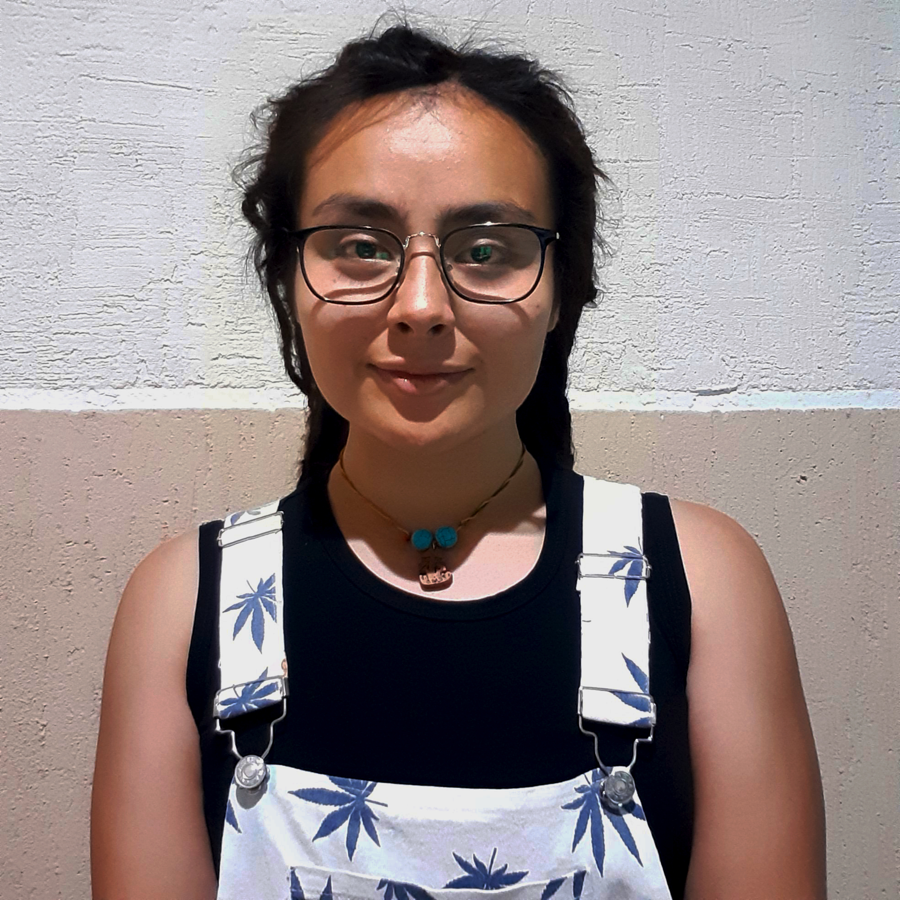

Zyanya Hernández Reyes
Actualmente estudio el séptimo semestre de la licenciatura en diseño gráfico, en la Benemérita Universidad Autónoma de Puebla.
Cuando era chiquita, tenía el pensamiento de que el diseño grafico no estaba tan chido porque el tratar con el cliente iba a ser una lata. Curioso. Empecé la carrera en esta disciplina y debo admitir, que cada día, crece mi amor por mi carrera. Cada materia es más interesante que la anterior; en las asignaturas que llegué a pensar que estarían muy difíciles o tediosas, resultaron siendo muy interesantes, hasta divertidas.
Hmmm pero yo diría que mi campo favorito es la ilustracion y la fotografía.
Me gusta andar en bici, mi papá me enseñó a andar desde los tres y de ahí no me soltó, me llevaba por las calles a pesar de que mi mamá le mortificara imaginarme entre coches con mi bicicleta. Salir de paseo sola o con mi pareja es una actividad muy especial, sin embargo, también es mi medio de transporte y gracias a que mi papá nunca le hizo caso a mi mamá, ahora andar en bici no es solo un hobby, es una herramienta que utilizo con frecuencia, me llebaba a mis trabajos y ahora me lleva a la uni los días que me toca ir .
Vivo con mi pareja y nuestra perra, una vieja pastor inglés. Su nombre es moncha, es como mi mejor amiga. Nos conocemos desde que nació y aunque a mi parecer es un perro muy consentido, siempre encuentra de qué quejarse. Hay veces que empieza a resoplar cuando ya es su hora de la comida, cuando ya pasó un rato empieza a chocar sus dientes, se pone en frente de nosotros e intenta hacer trucos como dar la pata. Cuado quiere comida de la mesa, la señala con la puta de su naríz, seguido por apuntar su nariz al piso, pidiendo que le den, eso que está en la mesa, poniéndolo en el piso, ya que es como le solemos compartir de nuestra comida. Mientras que para el baño solo empieza a lanzar gases mortales.
Pobre perro consentido, lo que más le gusta es jugar a jalar su juguete y se puede sentir su frustración al no poder hacer eso más seguido, al fin y al cabo, ella solo puede ver a mi ser sentado todo el día, en frente de un aparato que saca luz y hace ruido cada que muevo los dedos. Aunque también es hacerla mucho de mártir, jugamos cuando podemos y salimos siempre, solo que unas veces las distancias que recorremos pueden variar entre cortas y largas.
Tengo tres tatuajes. Junto a mi oreja izquierda, es el delineado de la silueta de un perro y un gato. En mi costilla, un pino y junto, una casa de campaña. El tercero está en mi tobillo derecho, es la línea con forma de bicicleta.
Me cuesta un poco lidiar con la frustración y a veces la organización que manejo llega a tener uno que otro tropiezo, pero estoy empeñada en poder mejorar para poder dar cada vez más y mejores resulados.
Pensé que esta clase sería complicada y tediosa, sin embargo, me he divertido mucho haciendo cada página y ya quiero empezar mi página para el negocio que tenemos. Admito que no siempre fue sencillo seguirle el paso pero sus explicaciones son muy claras y concretas. Gracias por todo lo que nos enseñó y que gusto que fuera mi maestra.